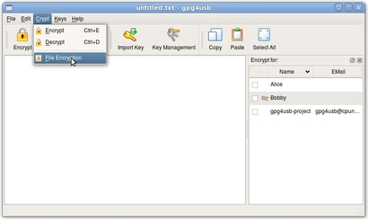
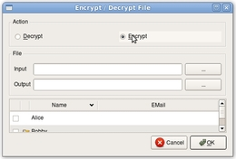
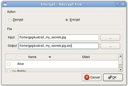

Cómo cifrar un archivo
Hay cinco pasos para cifrar un archivo. Supongamos que Bobby quiere cifrar un archivo para Alice y para él mismo (esto significa que tanto él como Alice pueden descifrar el archivo, cada uno con su propia llave privada). Él tiene que tener la llave pública de Alice y la suya propia.
PASO 1: Abrir menú 'Cifrar'
Primero, Bobby abre el menú 'Cifrar'. Alternativamente, él puede presionar el botón 'Archivo' en la barra de herramientas.

PASO 2: Escoger cifrar
Segundo, él escoge 'Cifrar archivo'.

PASO 3: Escoger archivo entrada/salida
Ahora escoge el archivo de entrada/salida. Cuando escoge el archivo de entrada (el que se va a cifrar), se recomienda que se dé el mismo nombre con el apéndice .asc para el archivo de salida (el archivo ya cifrado).

PASO 4: Escoger las llaves
Ahora, Bobby escoge las llaves de las personas para las que el archivo se va a cifrar. Dése cuenta de que él también tiene que seleccionar su propia llave si quiere ser capaz de poder descifrar este archivo más tarde.

PASO 5: Pulsar 'OK'
Ahora él pulsa el botón 'OK'.

Después de esto, aparece el mensaje 'OK'.